kubectl 能連到叢集curlocc CLI寫 YAML 之前,先搞清楚「我寫的東西」和「叢集裡真正跑的東西」是什麼關係。
所有 Kubernetes 風格的資源,都有相同的四個頂層欄位:
apiVersion: openchoreo.dev/v1alpha1 # 這個資源屬於哪個 API 與版本
kind: Component # 資源的種類
metadata: # 名稱、namespace、標籤等識別資訊
name: my-greeter
spec: # 你「期望」的內容
...
status 欄位則是控制器寫回來的實際狀態(你不用寫)。看到 .status.conditions 就是在讀它。
這是 OpenChoreo 的核心設計之一:
資源 | 回答的問題 | 誰關心 |
Component | 「這是什麼類型的東西?要怎麼被平台管理?」(what / how) | 平台與開發者共同 |
Workload | 「我的程式需要什麼才能跑?」(要什麼映像、開哪個埠、依賴誰) | 開發者 |
Workload 只描述需求,不描述 Kubernetes 怎麼滿足。同一份 Workload,平台可以用不同的 ComponentType(模板)翻譯成不同的 Kubernetes 資源。
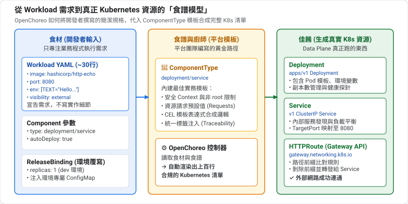
ComponentType 像是一個「食譜」:你提供食材(映像、埠、參數),食譜決定怎麼烹調(產生哪些資源、用什麼預設值)。所以你寫 30 行,平台能產生上百行的 Kubernetes 設定。這就是第 8 課要自己動手寫的東西。
要讓外部連到服務,Kubernetes 需要「路由」。Ingress 是舊的標準,Gateway API 是新一代標準,OpenChoreo 用的是它。你會看到:
資源 | 角色 |
Gateway | 流量入口(像大樓大門),由平台管理 |
HTTPRoute | 路由規則:「某個主機名稱與路徑,轉到哪個 Service」 |
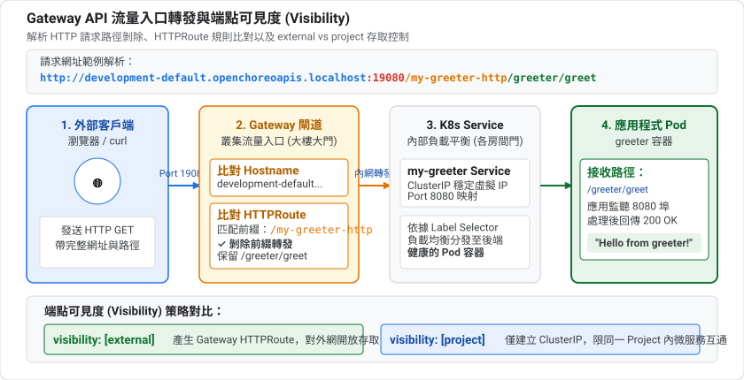
所以呼叫網址 http://development-default.openchoreoapis.localhost:19080/my-greeter-http/greeter/greet 可以拆成:
片段 | 意義 |
| 環境名稱 + namespace(用來區分主機名) |
| 閘道的網域 |
| 本機閘道對外的 port |
| 路徑前綴:元件名 + 端點名,HTTPRoute 依此比對 |
| 真正送給你應用程式的路徑(前綴會被剝掉) |
Workload 的每個端點都要宣告誰看得到它:
值 | 意義 |
| 經閘道對叢集外開放 |
| 只有同一個 Project 內的元件能連 |
預設不對外是比較安全的設計,你必須明確寫出 external 才會產生對外路由。
autoDeploy 的意思autoDeploy: true 表示:Component 一建立或變更,平台就自動產生 Release 並部署到管線的第一個環境。第 5 課會說明 Release 是什麼。
工具 | 定位 |
| 通用:所有 Kubernetes 資源都能操作,本系列主要用它,因為最透明 |
| OpenChoreo 專用:語意更高階(例如 |
下面開始動手。
Linux x64(其他平台請見官方頁面):
curl -L https://github.com/openchoreo/openchoreo/releases/download/v1.3.1/occ_v1.3.1_linux_amd64.tar.gz | tar -xz && sudo mv occ /usr/local/bin/
occ version
本機 k3d 的位址是 http://api.openchoreo.localhost:8080:
occ config controlplane update default --url http://api.openchoreo.localhost:8080
在 /etc/hosts 加入(若主機尚未解析 *.localhost):
127.0.0.1 api.openchoreo.localhost
127.0.0.1 thunder.openchoreo.localhost
127.0.0.1 observer.openchoreo.localhost
occ login
會開啟瀏覽器,使用 admin@openchoreo.dev / Admin@123。成功後試試:
occ namespace list
occ project list -n default
occ component list -n default
Negative : 若你的叢集用自簽 TLS 憑證(非本機 k3d 預設),需先信任 CA,步驟見官方 CLI 安裝頁。
建立 my-greeter.yaml,內含 Component 與 Workload 兩個文件:
apiVersion: openchoreo.dev/v1alpha1
kind: Component
metadata:
name: my-greeter
namespace: default
spec:
owner:
projectName: default
autoDeploy: true
componentType:
kind: ClusterComponentType
name: deployment/service
---
apiVersion: openchoreo.dev/v1alpha1
kind: Workload
metadata:
name: my-greeter-workload
namespace: default
spec:
owner:
componentName: my-greeter
projectName: default
endpoints:
http:
type: HTTP
port: 9090
visibility: [external]
container:
image: "ghcr.io/openchoreo/samples/greeter-service:latest"
command:
- ./go-greeter
args:
- --port
- "9090"
env:
- key: LOG_LEVEL
value: "info"
欄位 | 意義 |
| Component 屬於哪個 Project |
| 建立後自動部署到第一個環境 |
| 用平台提供的 |
| 這個 Workload 屬於哪個 Component |
| 宣告一個 HTTP 端點,port 9090, |
| 映像、指令、參數與環境變數 |
Positive : 官方範例 greeter-service.yaml 另外包含一個 SecretReference,用來注入 GITHUB_TOKEN。本課為了不依賴外部密鑰庫,刻意拿掉它。若服務啟動失敗,請先對照官方範例。
kubectl apply -f my-greeter.yaml
kubectl wait --for=condition=Ready component/my-greeter -n default --timeout=120s
也可以用 occ 確認:
occ component list --namespace default --project default
occ component get my-greeter --namespace default
Component 的變更會產生不可變的 ComponentRelease:
kubectl get component my-greeter -n default -o jsonpath='{.status.latestRelease.name}'
kubectl get componentrelease -n default
名稱尾碼是 Release spec 的雜湊值,你的結果會不同。
kubectl get releasebinding my-greeter-development -n default
這就是第 2 課說的「把 Release 釘在某個環境」。
kubectl get deployment,svc,httproute -A -l openchoreo.dev/component=my-greeter
這些資源位於類似 dp-default-default-development-* 的 namespace,而不是 default。
常有人疑惑：「Data Plane 是儲存資料的資料庫嗎？」答案是：不是！ 在網路與 Kubernetes 語境中,「Data」指的是「使用者的業務數據封包(Payload Data)」。Data Plane 實質上是**「API 智慧引流閘道 + 業務容器執行期」**的集合體。它透過 Envoy 閘道知道如何將外部請求路徑精準路由至對應服務,並真正承載所有微服務 Pod 的運算執行。
在底層架構上,OpenChoreo 採用了雙層命名空間(Two-Tier Namespaces)與反向代理閘道架構:
openchoreo-data-plane查看 Data Plane 基礎設施元件:
kubectl get pods,svc -n openchoreo-data-plane
你會看到三大關鍵守護組件:
元件名稱 | 類型 | 角色與底層機制 |
| Envoy Proxy (LoadBalancer) | 外部流量總閘門。監聽外部 |
| 叢集通訊代理 (Agent) | 跨平面通訊橋樑。透過 gRPC + mTLS 主動向 Control Plane 保持長連線,接收已渲染的部署指令,並向控制平面回報容器健康狀態。 |
| 路由中繼 (Router) | 在多叢集環境中負責遠端資料平面的指令路由與安全通道轉發。 |
dp---- 開發者在 Control Plane 的 default 命名空間宣告 Component,但真正的業務 Pod 絕不會跑在 Control Plane。平台會自動開闢隔離命名空間:
kubectl get all,httproute,networkpolicy -n dp-default-default-development-f8e58905
當一個 Component 部署完成,Data Plane 會自動生成五大協同工件:
Deployment / Pod: 運行使用者的業務容器(如 Go Greeter)。Service: 提供叢集內部穩定的虛擬 IP 與 CoreDNS 名稱(如 my-greeter.dp-...svc.cluster.local:9090)。HTTPRoute (Gateway API): 宣告將 Envoy 閘道網址(development-default.openchoreoapis.localhost:19080/my-greeter-http)綁定至該 Service。NetworkPolicy (零信任隔離): 預設 Default Deny,僅允許 Envoy 閘道與同專案宣告依賴的微服務進入,防止惡意橫向攻擊。ConfigMap / Secret: 注入由平台解析的環境變數與安全憑證。[外部使用者 / 瀏覽器] ─▶ (HTTP: 19080)
│
▼
[🚪 gateway-default (Envoy Proxy)] ◀── (配置 HTTPRoute) ── [cluster-agent-dataplane]
│ ▲
│ (轉發路徑: /my-greeter-http) │ (mTLS 接收指令)
▼ │
┌─ Data Plane 隔離命名空間 (dp-default-default-development-*) ───────────┴──────────┐
│ │
│ 🛡️ NetworkPolicy (核心層過濾非授權流量) │
│ │ │
│ ▼ │
│ [Service: my-greeter (ClusterIP: 9090)] │
│ │ │
│ ▼ │
│ [Pod: my-greeter (Go Container)] ─▶ Fluent-bit 抓取日誌送 Observability Plane │
│ │
└──────────────────────────────────────────────────────────────────────────────────┘
RenderedReleaseControl Plane 是如何將抽象的 Component 與 ReleaseBinding 變成 Data Plane 上的真實 Pod 與 Service？關鍵在於 RenderedRelease（渲染後的發布合約）：
kubectl get renderedrelease -n default
你會看到例如 greeting-service-development 或 react-starter-development。用 describe 或 yaml 觀察它：
kubectl get renderedrelease greeting-service-development -n default -o yaml
這個 CRD 揭示了跨平面的三大底層機制：
spec.targetPlane: dataplane：明確指示此資源集合由 Data Plane 負責承載。spec.resources[]：控制器編譯後的完整 Kubernetes 原生清單（包含目標命名空間 dp-default-default-development-*、Envoy 閘道父參照 gateway-default、以及容器鏡像位址與連接埠）。status.resources[] 與健康回報：遠端的 cluster-agent-dataplane 套用工件後，會主動探測資源狀態（如 Deployment 的 readyReplicas、HTTPRoute 的 Accepted 條件），並將 healthStatus: Healthy 即時回報寫入此 CRD。Positive : 在 Backstage 介面點擊「View K8s Artifacts」所看到的五大工件樹狀圖，底層就是 Experience Plane 直接讀取並可視化這個 RenderedRelease 物件！
在 Backstage 入口網站中，我們可以直接看到剛部署的 my-greeter 呈現於專案與元件管理中：
1. Project 專案總覽：已同時列出 my-greeter 與 react-starter，Development 環境顯示綠色打勾表示健康運作：
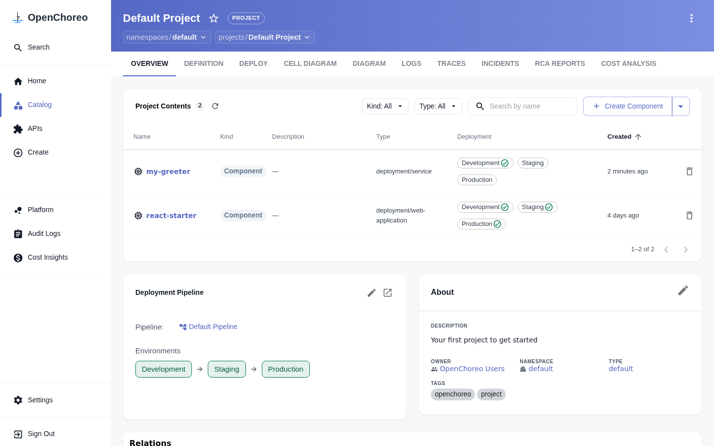
2. Component 元件概況：點進 my-greeter，可檢視 Runtime Health（綠色 Healthy）、類型（deployment/service）與右下角實體關係圖：
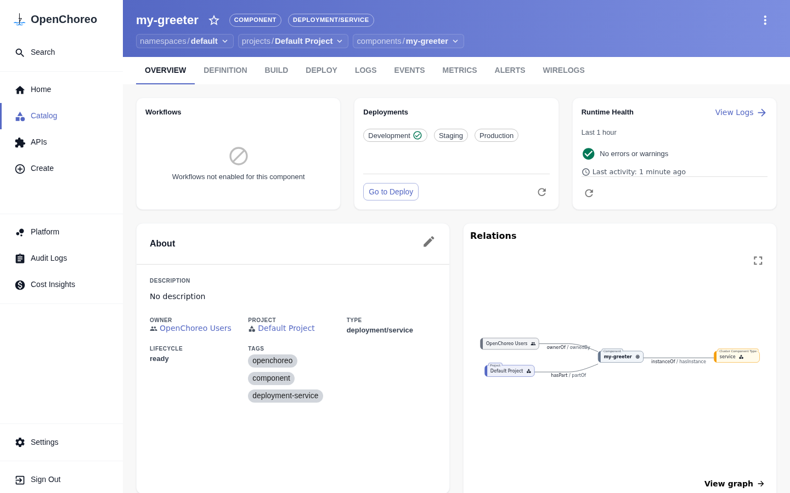
3. DEPLOY 部署流水線：展示 my-greeter 剛完成 Development 部署，右側側邊欄提供版本雜湊、對外端點與 Promote 晉升按鈕：
4. 檢視生成的 Kubernetes 工件（View K8s Artifacts）：點擊右側的「View K8s Artifacts」按鈕，可直接看見平台如何把 ReleaseBinding 自動渲染成 5 大 Kubernetes 原生資源（NetworkPolicy、Service、HTTPRoute、Deployment、ConfigMap）：
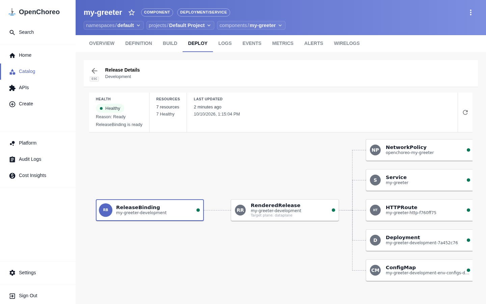
5. 容器即時日誌（LOGS）：切換至 LOGS 分頁，能看到 Fluent-bit 聚合抓取的服務啟動紀錄（Starting HTTP Greeter on port 9090）：
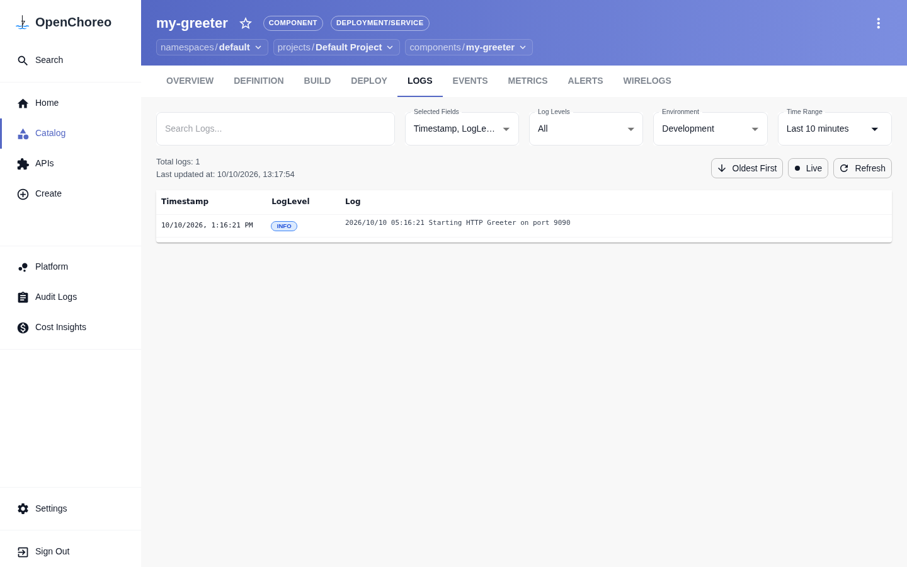
6. 原生 CRD 宣告式定義（DEFINITION）：在 DEFINITION 分頁中，可直接檢視與複製 Kubernetes Component CRD YAML：
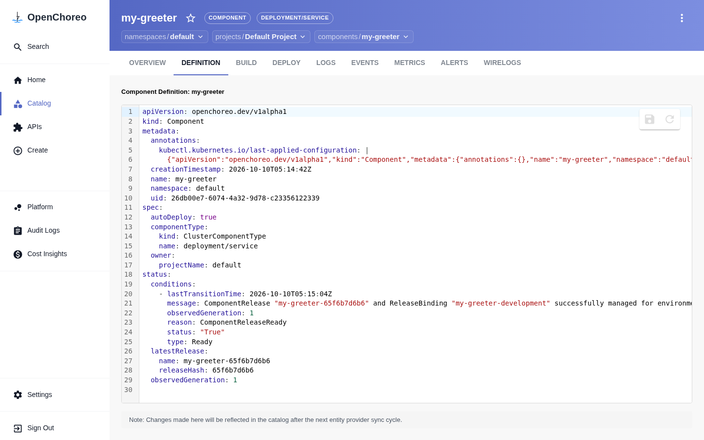
7. 專案架構相依圖（DIAGRAM）：回到專案切換至 DIAGRAM 分頁，可一覽整個命名空間與所有微服務元件的拓撲圖：
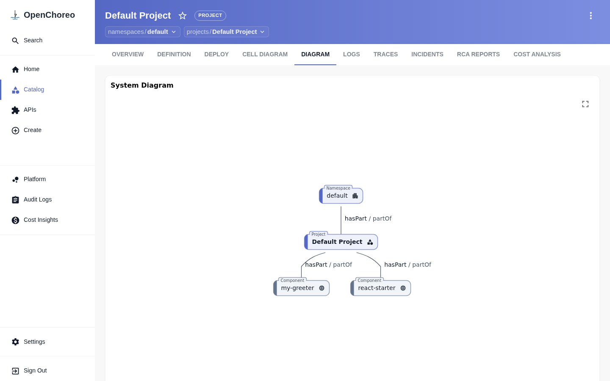
Positive : 你只寫了約 30 行 YAML,平台根據 deployment/service 這個 ComponentType 幫你生出 Deployment、Service 與 HTTPRoute。
閘道網址格式:
http://{environment}-{namespace}.{gateway-host}/{endpoint-name}/{path}
在元件的 DEPLOY 分頁右側面板中，點擊 ENDPOINTS 下方的 View All，門戶會彈出端點對話框，提供對外閘道網址（External）與叢集內部 DNS 服務網址（Project），並附有一鍵複製按鈕：
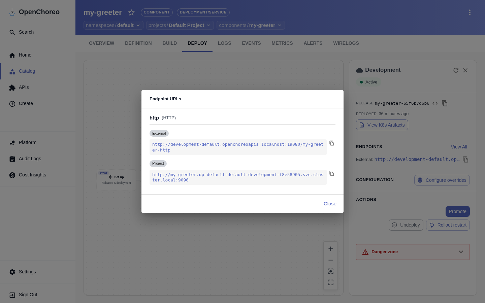
複製 External 端點網址後加上 /greeter/greet，本機 Dev Container 的閘道在 19080:
curl http://development-default.openchoreoapis.localhost:19080/my-greeter-http/greeter/greet
curl "http://development-default.openchoreoapis.localhost:19080/my-greeter-http/greeter/greet?name=OpenChoreo"
你也可以直接在瀏覽器網址列貼上 http://development-default.openchoreoapis.localhost:19080/my-greeter-http/greeter/greet?name=OpenChoreo，瀏覽器會直接收到服務回應：
預期輸出:
Hello, Stranger!
Hello, OpenChoreo!
Positive : 端點路徑前綴是 /{component}-{endpoint 名稱},所以這裡是 /my-greeter-http。可用 kubectl get httproute -A -l openchoreo.dev/component=my-greeter -o yaml 確認。
症狀 | 檢查 |
Component 一直不 Ready |
|
Pod 起不來 | 在 |
404 | 檢查 HTTPRoute 的 path 與主機名 |
連不上 | 確認閘道 port 是 19080(Dev Container) |
把 LOG_LEVEL 改成 debug,重新套用:
sed -i 's/value: "info"/value: "debug"/' my-greeter.yaml
kubectl apply -f my-greeter.yaml
kubectl get componentrelease -n default
kubectl get releasebinding my-greeter-development -n default -o yaml
觀察:
autoDeploy: true)?重新整理 OpenChoreo 門戶，你可以直接在網頁上觀察到不可變製品的自動更新：
1. DEPLOY 分頁中的 Release 雜湊自動推進：Release 欄位自動跳至新版本（例如 my-greeter-7d65b4b7dc），DEPLOYED 時間重設為剛剛，右側 Promote 按鈕維持可用：
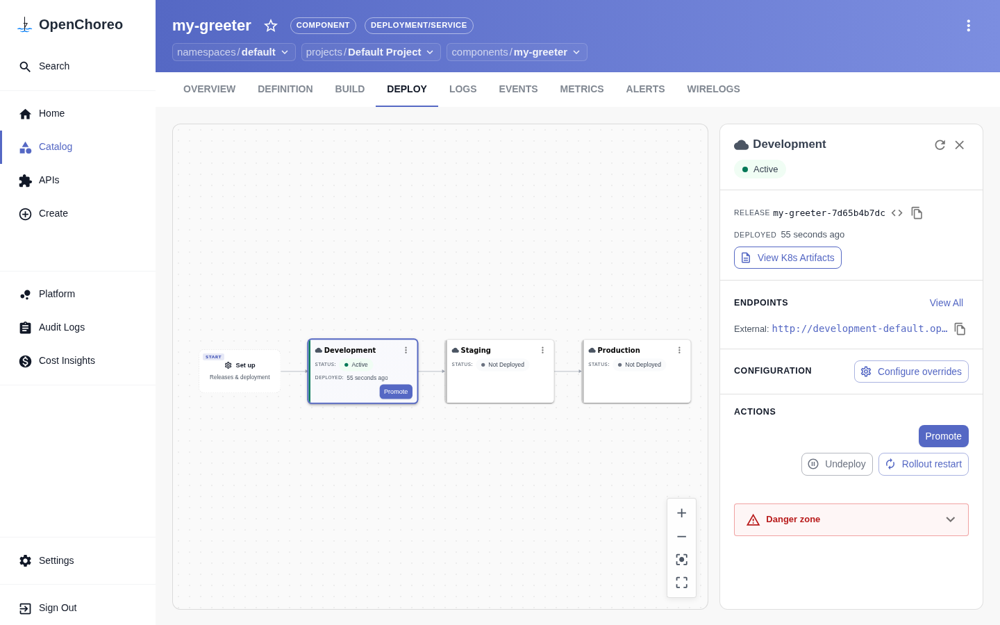
2. DEFINITION 分頁中的 CRD 狀態同步：Component 的狀態區塊（.status.latestRelease）同步更新為新的 releaseHash，證明平台控制器在 Kubernetes 背景完成調和：
除了使用 kubectl 指令之外，OpenChoreo 的網頁介面也提供了兩種不同層級的清理方式：
如果你只是想暫時釋放資源，但未來還需要該元件，可以在元件的 DEPLOY 分頁選取該環境（如 Development），點擊右側面板 ACTIONS 中的 Undeploy 按鈕：
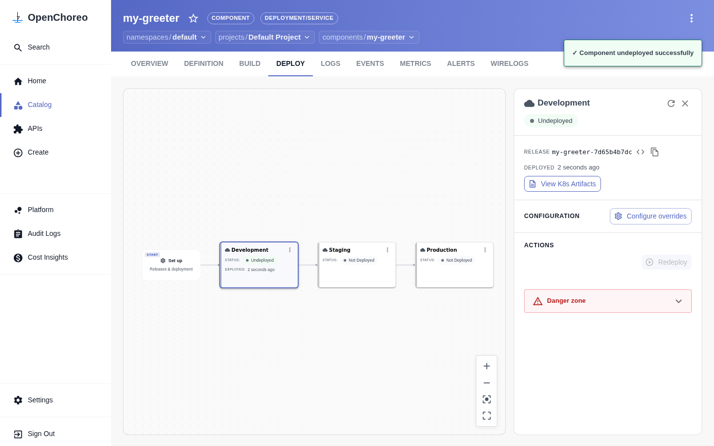
ReleaseBinding 的狀態轉為 Undeployed，並將 Data Plane 中的 Pod 副本縮減至 0、釋放 CPU/Memory 資源，但保留元件定義與歷史版本。未來點擊 Redeploy 即可隨時恢復。若要徹底移除元件及其所有相關資源，可在 Project 總覽（OVERVIEW） 頁面的 Project Contents 列表中，點擊該元件右側的 垃圾桶圖示 🗑️：
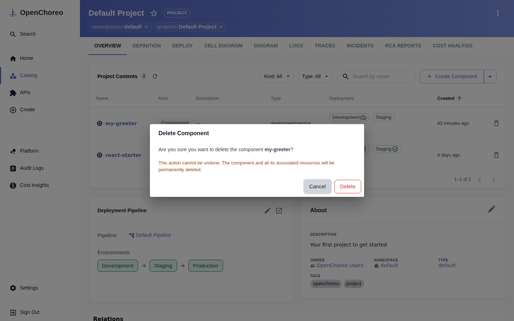
Delete 後，OpenChoreo 控制器會執行級聯刪除（Cascade Delete），自動將 Kubernetes 內的 Component、Workload、所有 ComponentRelease、ReleaseBinding，以及工作節點上的 Deployment、Service、HTTPRoute 與 ConfigMap 一併徹底清除。kubectl delete -f my-greeter.yaml
試著不看上文回答下面的問題;答不出來的,回頭看對應的章節。
http://development-default.openchoreoapis.localhost:19080/my-greeter-http/greeter/greet 的 /my-greeter-http 是什麼?LOG_LEVEL 後再 apply,發生了什麼事?/{元件名}-{端點名},轉給應用時會被剝掉。visibility 寫成 external(例如寫 project),只有 external 才會產生對外路由。autoDeploy: true,development 的 ReleaseBinding 指向新 Release。你已經:
occ04:從原始碼建置 — 啟用 Workflow Plane,從 Git 原始碼自動建置映像並部署。